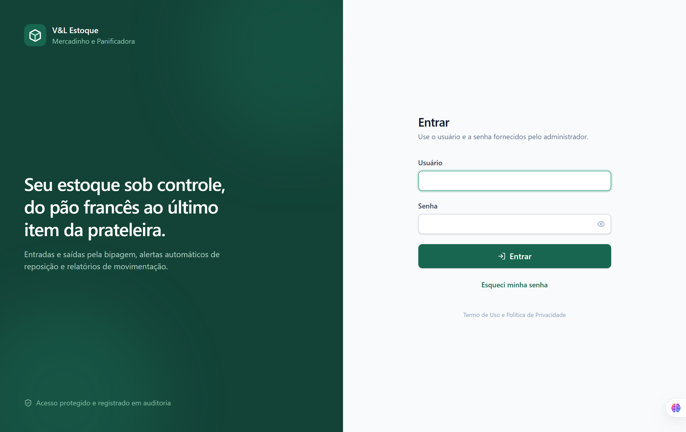
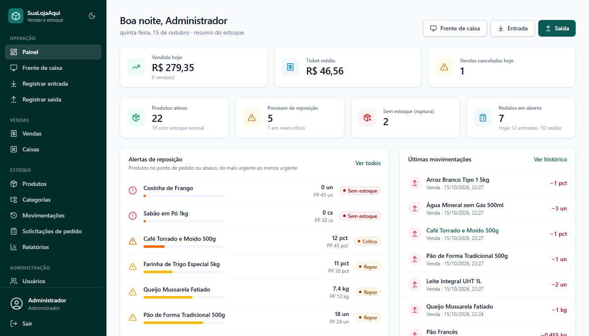
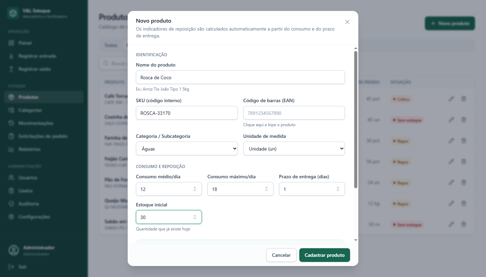
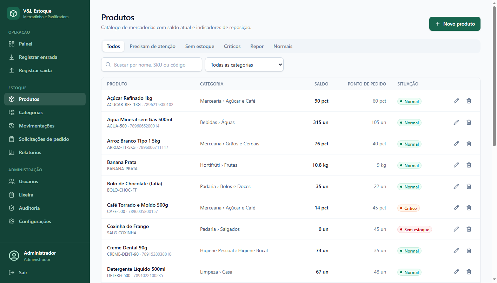
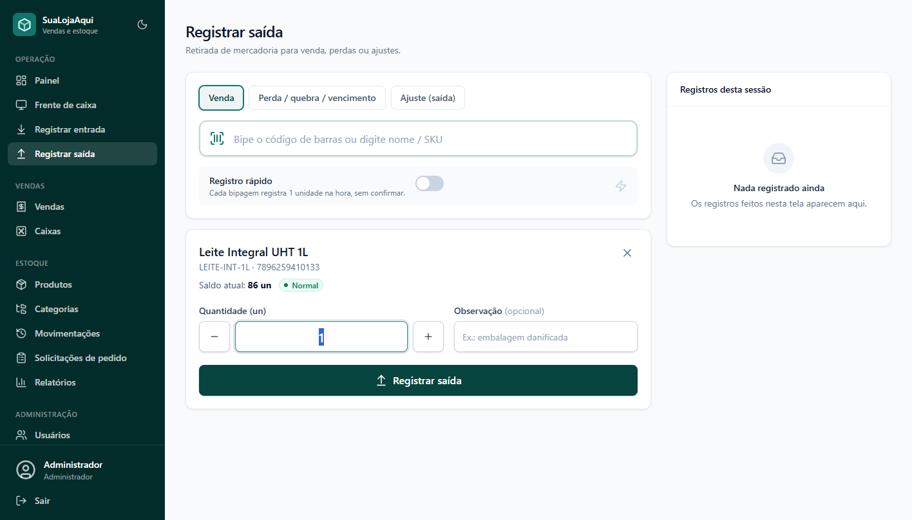
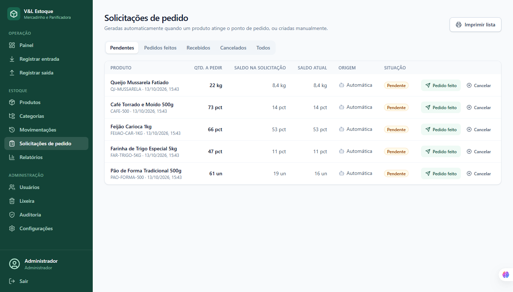
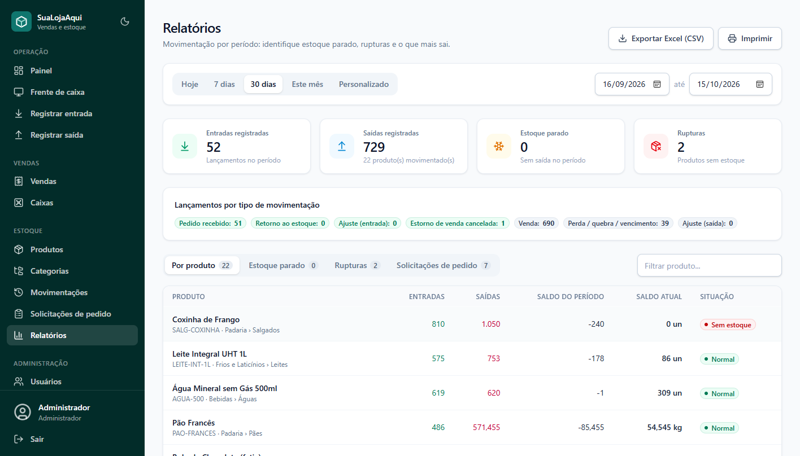
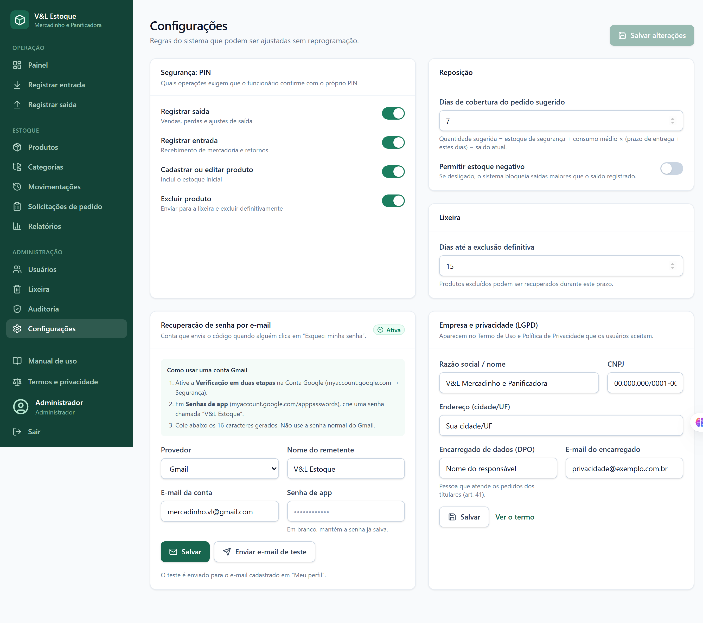
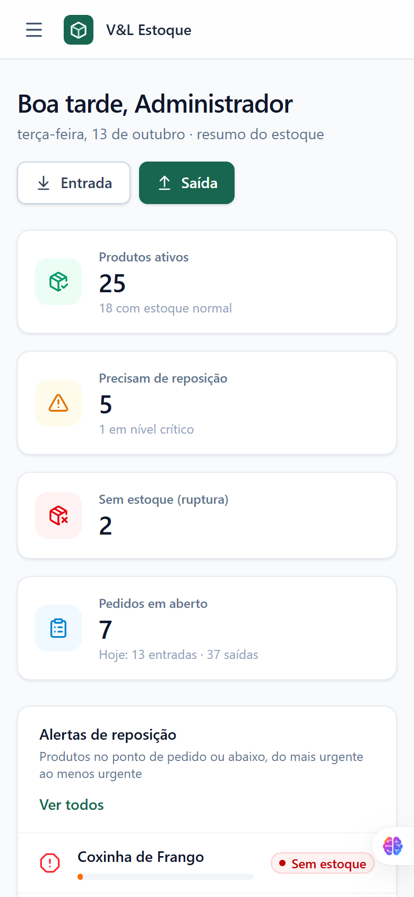

V&L Mercadinho e Panificadora
Este manual também está disponível dentro do sistema, no menu Manual de uso.
Sumário
Primeiro acesso senha e PIN
Entrando no sistema login e perfis
O painel visão geral do dia
Cadastrar produtos e os cálculos automáticos
Registrar entrada mercadoria que chegou
Registrar saída vendas e perdas
Alertas e solicitações de pedido reposição
Relatórios por período e por produto
Excluir e recuperar produtos lixeira
Usuários e permissões administrador
Configurações administrador
Backup no Google Drive proteção dos dados
Celular e uso sem internet
Dúvidas frequentes
1. Primeiro acesso
Na primeira vez que o V&L Estoque é aberto depois da instalação, ele entra sozinho com o usuário administrador (admin) e mostra a tela Bem-vindo. Não é preciso digitar nenhuma senha provisória.
Em Nova senha, crie a sua senha pessoal: mínimo de 8 caracteres, com letras e números. Repita em Confirme a nova senha.
Crie também o seu PIN: um código de 4 a 6 números, usado para confirmar operações como vendas, entradas e exclusões. Repita em Confirme o PIN.
Clique em Salvar e continuar. Pronto: o sistema abre no painel.
Guarde bem a senha e o PINDaqui pra frente, para entrar, use o usuário admin e a senha que você criou. Recomendamos cadastrar um segundo administrador (veja o capítulo 10): assim, se alguém esquecer a senha, o outro pode redefinir.
Sobre o backupLogo depois, o sistema avisa se encontrou o Google Drive para guardar os backups. Se ainda não estiver instalado, veja o capítulo 12.
Os funcionários que você cadastrar passam pelo mesmo processo: no primeiro login com a senha provisória que você definir, o sistema pede que cada um crie a própria senha e o próprio PIN.
2. Entrando no sistema

Tela de login
Abra o atalho VL Estoque na área de trabalho. Aguarde a tela de carregamento (alguns segundos).
Digite o seu usuário e a sua senha e clique em Entrar.
SegurançaDepois de 5 senhas erradas, o usuário fica bloqueado por 15 minutos. Para sair, use Sair no fim do menu lateral, principalmente em computadores compartilhados.
Perfis de acesso
Cada pessoa vê apenas o que o seu perfil permite:
Perfil
O que pode fazer
Administrador
Acesso total: usuários, configurações, lixeira e auditoria.
Estoquista
Cadastra produtos, registra entradas e saídas, pedidos e relatórios.
Caixa
Consulta produtos e registra saídas (vendas).
3. O painel
É a primeira tela depois do login. Mostra, num relance, como está o estoque:

Painel com indicadores, alertas de reposição e últimas movimentações
Indicador
O que significa
Produtos ativos
Total de produtos cadastrados (e quantos estão com estoque normal).
Precisam de reposição
Produtos que chegaram no ponto de pedido (e quantos estão em nível crítico).
Sem estoque (ruptura)
Produtos com saldo zerado.
Pedidos em aberto
Solicitações de pedido ainda não recebidas, e o número de entradas e saídas de hoje.
Os botões Entrada e Saída, no topo, levam direto ao registro de movimentações. No menu lateral, Manual de uso abre este manual a qualquer momento.
4. Cadastrar produtos
No menu, clique em Produtos e depois em Novo produto.
Preencha os campos (veja a tabela abaixo). Para o código de barras, clique no campo e bipe o produto com o leitor.
Clique em Cadastrar produto e confirme com o seu PIN.

Cadastro de produto: os indicadores são calculados enquanto você digita
Campo
O que colocar
Nome do produto
Descrição clara e padronizada: marca, tipo, tamanho. Ex.: Arroz Tio João Tipo 1 5kg.
SKU (código interno)
Código criado pela loja para identificar o item.
Código de barras (EAN)
O código impresso na embalagem. Basta bipar.
Categoria / Subcategoria
Organiza o catálogo e os relatórios. Novas categorias são criadas em Categorias.
Unidade de medida
Como o item é vendido ou contado: unidade, kg, g, litro, ml, metro, caixa, pacote ou dúzia.
Consumo médio/dia
Quanto sai, em média, por dia.
Consumo máximo/dia
Quanto sai num dia de muito movimento.
Prazo de entrega (dias)
Quantos dias o fornecedor leva para entregar depois do pedido.
Estoque inicial
Quantidade que já existe hoje na loja (só no cadastro).
Cálculos automáticos
Com o consumo e o prazo de entrega, o sistema calcula sozinho três indicadores:
Indicador
Fórmula
Para que serve
Estoque mínimo (EM)
consumo médio × prazo
O que se consome enquanto a entrega não chega.
Estoque de segurança (ES)
(consumo máximo − médio) × prazo
Proteção contra dias de pico.
Ponto de pedido (PP)
EM + ES
Ao chegar nele, o sistema gera a solicitação de pedido.
ExemploPão de forma: consumo médio de 10 por dia, máximo de 16, entrega em 3 dias. EM = 10 × 3 = 30. ES = (16 − 10) × 3 = 18. PP = 30 + 18 = 48. Quando o estoque cair para 48 ou menos, o sistema pede reposição.
Encontrar e editar um produto
Em Produtos, digite parte do nome, o SKU ou bipe o código de barras na busca. Clique no produto para ver os detalhes, o histórico e o botão Editar.

Lista de produtos com busca, filtros e situação do estoque
5. Registrar entrada
Use quando chega mercadoria de um pedido ou quando um item volta para o estoque.
No menu, clique em Registrar entrada.
Clique no campo Clique aqui e bipe o produto e bipe o código de barras. Também dá para digitar o nome ou o SKU.
Escolha o Tipo de movimentação: Pedido recebido, Retorno ao estoque ou Ajuste (entrada).
Informe a quantidade (use os botões − e + ou digite) e confirme. O sistema pede o seu PIN.
Registro rápidoLigando a opção Registro rápido, cada bipagem registra 1 unidade na hora, sem precisar confirmar. É ideal para conferir uma caixa item por item.
O saldo do produto é somado automaticamente, e a movimentação fica gravada no histórico (Movimentações), com data, hora e quem registrou.
6. Registrar saída
Use para vendas e para tudo que sai do estoque.

Registro de saída com o alerta de reposição
No menu, clique em Registrar saída.
Bipe ou busque o produto.
Escolha o tipo: Venda, Perda / quebra / vencimento ou Ajuste (saída).
Informe a quantidade e confirme com o seu PIN.
Se, depois da saída, o produto atingir o ponto de pedido, aparece um alerta de reposição e o sistema cria automaticamente uma solicitação de pedido (capítulo 7).
Estoque insuficientePor padrão, o sistema não deixa a saída ser maior que o saldo. Se isso acontecer, confira o estoque físico e registre um ajuste. O administrador pode mudar essa regra em Configurações.
7. Alertas e solicitações de pedido
Situação de cada produto
Situação
Quando aparece
Normal
Estoque acima do ponto de pedido.
Repor
Chegou no ponto de pedido: hora de pedir.
Crítico
Abaixo do estoque de segurança: risco de faltar.
Sem estoque
Saldo zerado (ruptura).
Solicitações de pedido
Quando um produto chega ao ponto de pedido, o sistema gera uma solicitação com o SKU, os dados do item e a quantidade sugerida, que aparece em Solicitações de pedido para a gestão.

Solicitações de pedido geradas automaticamente
Pendente: a solicitação foi gerada. Ao fazer o pedido ao fornecedor, clique em Pedido feito. Se não for pedir, clique em Cancelar.
Pedido feito: quando a mercadoria chegar, clique em Recebido.
Em seguida, registre a entrada da mercadoria (capítulo 5) para o saldo ser atualizado.
Como a quantidade é sugeridaES + consumo médio × (prazo + dias de cobertura) − saldo atual. Os dias de cobertura (padrão: 7) são ajustados em Configurações.
8. Relatórios

Relatório de movimentações por período
No menu, clique em Relatórios.
Escolha o período: Hoje, 7 dias, 30 dias, Este mês ou Personalizado (de/até).
O relatório é geral. Para ver um item específico, digite o nome ou o SKU no campo Filtrar produto..., acima da tabela.
Aba
O que mostra
Por produto
Entradas, saídas e saldo de cada produto no período.
Estoque parado
Produtos sem nenhuma saída no período.
Rupturas
Produtos que estão sem estoque.
Solicitações de pedido
Todas as solicitações emitidas no período.
Use Imprimir para gerar uma versão em papel (ou PDF) e Exportar Excel (CSV) para abrir a planilha no Excel.
9. Excluir e recuperar produtos
Quando um produto deixa de ser vendido, ele pode ser excluído. A exclusão tem uma “reciclagem” para os casos de engano:
Abra o produto e clique em Excluir e depois em Mover para a lixeira (o PIN é pedido).
O produto vai para a Lixeira e some das listas, mas pode ser recuperado com Restaurar durante o prazo (padrão: 15 dias).
Passado o prazo, ele é apagado definitivamente, junto com todo o histórico de movimentações e solicitações. O administrador também pode usar Excluir definitivamente antes do prazo.
AtençãoA exclusão definitiva não pode ser desfeita.
10. Usuários e permissões
Somente o administrador. Cada funcionário deve ter o próprio usuário: assim o sistema registra quem fez cada operação.
No menu, clique em Usuários e em Novo usuário.
Preencha Nome completo, Login (usuário) (ex.: maria.silva), o perfil (Administrador, Estoquista ou Caixa) e uma Senha provisória.
Passe o login e a senha provisória ao funcionário. No primeiro acesso, ele cria a própria senha e o próprio PIN.
Situação
O que fazer
Funcionário esqueceu a senha
Redefinir senha: ele recebe uma nova senha provisória.
Funcionário esqueceu o PIN
Redefinir PIN.
Funcionário saiu da loja
Desativar: o acesso é bloqueado e o histórico é mantido. Dá para Reativar depois.
Em Auditoria, o administrador vê o registro de tudo o que foi feito: logins, cadastros, exclusões e alterações, com data, hora e usuário.
Cada pessoa pode trocar a própria senha e o PIN em Meu perfil, clicando no próprio nome no fim do menu.
11. Configurações
Somente o administrador. Em Configurações:

Configurações do sistema
Opção
O que faz
PIN exigido para…
Escolhe quais operações pedem o PIN: registrar saída, registrar entrada, cadastrar ou editar produto e excluir produto. Por padrão, todas pedem.
Dias de cobertura do pedido sugerido
Para quantos dias a quantidade sugerida deve durar depois da entrega (padrão: 7).
Permitir estoque negativo
Se ligado, permite registrar saída maior que o saldo (padrão: desligado).
Dias até a exclusão definitiva
Por quanto tempo os produtos excluídos ficam na lixeira (padrão: 15).
12. Backup no Google Drive
O sistema guarda os dados no próprio computador e faz cópias de segurança automáticas no Google Drive. Assim, se o computador der defeito, nada se perde.
Como ativar (uma vez só)
Instale o Google Drive para computador (google.com/drive/download) e entre com a conta Google da loja.
Feche e abra o V&L Estoque. Ele encontra a pasta Meu Drive sozinho e avisa: “Backup automático no Google Drive ativado”.
A partir daí, uma cópia é salva ao abrir, a cada 4 horas e ao fechar o sistema, na pasta Meu Drive › VL Estoque - Backups. Ficam guardados os backups dos últimos 30 dias.
Computador novo ou com defeito
No computador novo, instale o Google Drive (com a mesma conta) e o V&L Estoque.
Na primeira abertura, o sistema encontra o backup e pergunta: “Deseja restaurar os produtos, movimentações e usuários?”. Clique em Restaurar dados.
Entre com os usuários e senhas de sempre.
ImportanteSe o Google Drive estiver fechado ou sem internet, o backup é guardado no próprio computador e enviado ao Drive quando ele voltar. Mantenha o Google Drive sempre aberto.
13. Celular e uso sem internet
Sem internet
No computador da loja, o V&L Estoque funciona normalmente sem internet: o banco de dados fica no próprio computador. A internet só é usada pelo Google Drive para enviar os backups.
Usar no celular (mesma rede Wi-Fi)
Com o sistema aberto no computador da loja, descubra o endereço IP do computador (ex.: 192.168.0.10).
No celular, conectado ao mesmo Wi-Fi, abra o navegador e acesse http://IP-DO-COMPUTADOR:3030.
No menu do navegador, toque em Instalar app (ou Adicionar à tela inicial) para criar um atalho.

Painel no celular
Se o Wi-Fi cairNo celular, as entradas e saídas registradas sem conexão ficam guardadas e são enviadas sozinhas quando a conexão voltar. Um aviso no topo da tela mostra quantas estão aguardando.
Primeira vezO Windows pode perguntar se o V&L Estoque pode se comunicar na rede. Clique em Permitir (redes privadas) para o celular conseguir acessar.
14. Dúvidas frequentes
Pergunta
Resposta
Esqueci minha senha.
Peça a um administrador para usar Redefinir senha em Usuários.
Errei o PIN e foi bloqueado.
Depois de 5 PINs errados, aguarde 5 minutos. Se esqueceu o PIN, peça ao administrador para redefinir.
Aparece “Você ainda não cadastrou um PIN”.
Vá em Meu perfil e crie o PIN em PIN de confirmação.
O leitor de código de barras não funciona.
Clique primeiro no campo de busca ou de bipagem; o leitor “digita” o código onde o cursor estiver.
Registrei uma quantidade errada.
Faça um ajuste (entrada ou saída) com a diferença. O histórico guarda as duas operações.
O produto sumiu da lista.
Ele pode ter sido excluído: confira a Lixeira (administrador).
O sistema não abre.
Feche e abra de novo. Se persistir, reinicie o computador. Os detalhes do erro ficam em %LOCALAPPDATA%\VLEstoque\logs.